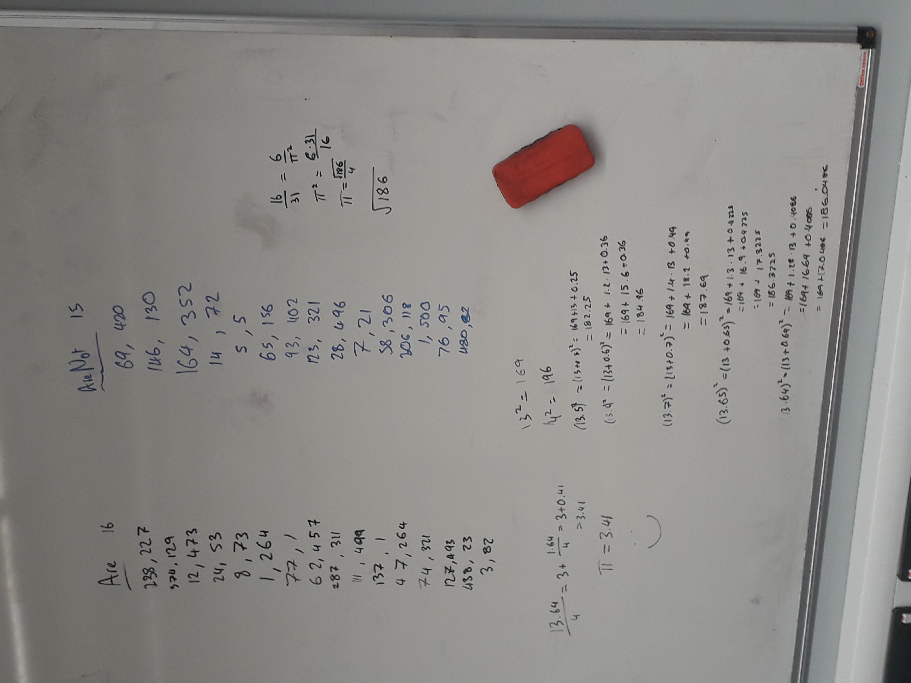
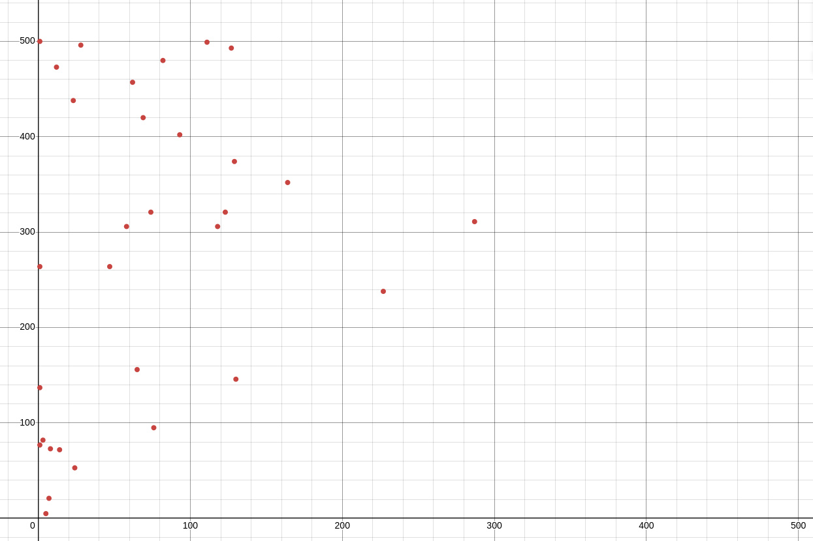

I’ve been thinking for a while about what activity I would like to do for pi day. Unfortunately the ideas kind of got lost in the mess of university work I’ve been doing this semester, so all plans went out the window. It was as I was walking home last night that I decided to commit to one of my ideas and I asked my friends to give me two integers between 1 and 500.
In preparation for pi day I was searching for strange places where \(\pi\) shows up, in particular ones that could be approximated by hand (admittedly not very accurately, but that’s part of the fun). There are of course a couple famous ones, my favourite being Buffon’s needle problem (see this wikihow article - well worth a read). I did also find a paper about estimating pi using a shotgun, quite the overkill version of the dartboard method and surprisingly not in SIGBOVIK.
One place I found really surprising, was when looking at coprimality of two randomly chosen numbers. Coprimality is the property that given a random pair of integers do the numbers share any factors or not? It turns out that the probability of being coprime is actually \(\frac{6}{\pi^2}\), surprising right?
As I’ve been taking a course in number theory recently, this seemed far too interesting to not look at. It turns out that this is related to the Basel problem and this is where our mysterious \(\pi\) comes from. So what is the Basel problem?
The Basel problem asks for the precise value of the following sum
\[ \sum_{n=1}^\infty \frac{1}{n^2} = \frac{1}{1^2} + \frac{1}{2^2} + \frac{1}{3^2} + \dots \]We know that the value is in fact \(\frac{\pi^2}{6}\). There is a great explanation from 3b1b explaining why pi is involved. In this video he uses the inverse square law for light and imagines these on circles. I will instead prove this using Euler’s original (slightly less rigorous) solution.
Assuming we can model \(\sin(x)\) by the roots of the function we can express it as the following
$$ \begin{align} \sin(x) &= \cdots \left(1 - \frac{x}{-2\pi}\right) \left(1 - \frac{x}{-\pi}\right) x \left(1 - \frac{x}{\pi}\right) \left(1 - \frac{x}{2\pi}\right) \cdots \\ &= x \left(1 - \frac{x^2}{\pi^2}\right) \left(1 - \frac{x^2}{4\pi^2}\right) \left(1 - \frac{x^2}{9\pi^2}\right) \cdots \\ &= x \prod_{n = 1}^\infty \left(1 - \frac{x^2}{n^2\pi^2}\right). \end{align} $$
We now consider the Maclaurin series for \(\sin(x)\), which is given by the following
\[ \sin(x) = x - \frac{x^3}{3!} + \frac{x^5}{5!} + \cdots. \] test-websiteThe final key step to this is to compare the coefficients for \(x^3\).
$$ \begin{align} -\frac{1}{3!} &= -\left(\frac{1}{1\pi^2} + \frac{1}{2^2\pi^2} + \frac{1}{3^2\pi^2} + \cdots \right) \\ \frac{1}{6} &= \frac{1}{\pi^2} \left(1 + \frac{1}{2^2} + \frac{1}{3^2} + \cdots \right) \\ \frac{\pi^2}{6} &= 1 + \frac{1}{2^2} + \frac{1}{3^2} + \cdots \end{align} $$
That is
\[ \sum_{n=1}^\infty \frac{1}{n^2} = \frac{1}{1^2} + \frac{1}{2^2} + \frac{1}{3^2} + \cdots = \frac{\pi^2}{6}. \]Now we look at why this even shows up in our calculation. Intuitively, any integer is divisible by some prime \(p\) with a probability of \(\frac{1}{p}\), because every \(p\)-th integer is a multiple of \(p\). Therefore the probability of any pair being divisible by any given prime is \(\frac{1}{p^2}\) and the probability that at least one is not divisible by this prime is \(1 - \frac{1}{p^2}\) i.e. the probability that not both are divisible by the prime.
Now consider divisibility by two primes \(p\) and \(q\) for some integer \(n\), the probability of \(n\) being divisible by \(p\) and \(q\) is \(\frac{1}{p}\) and \(\frac{1}{q}\) respectively and the probability of \(n\) being divisible by \(pq\) is therefore given by \(\frac{1}{pq}\) as expected (i.e. the events are independent). We can therefore combine multiple prime divisibility probabilities to obtain the total probability of being coprime. Let \(P\) be the set of all primes, then we have that the probability of coprimality (with some assumptions 1) is given by
\[ \prod_{p \in P} \left(1 - \frac{1}{p^2}\right) \]So how do we link this with the Basel problem? Through the Riemann zeta function!
Let us first define the Riemann zeta function at \(s\),
\[ \zeta(s) = \sum_{n = 1}^\infty \frac{1}{n^2} = 1 + \frac{1}{2^2} + \frac{1}{3^2} + \cdots . \]We now consider removing every fraction with an even base, that is, the terms given by
\[ \frac{1}{2^s}\zeta(s) = \frac{1}{2^s} + \frac{1}{4^s} + \frac{1}{6^s} + \dots. \]Then
\[ \left(1 - \frac{1}{2^s}\right)\zeta(s) = 1 + \frac{1}{3^s} + \frac{1}{5^s} + \cdots. \]Notice that \(1 - \frac{1}{2^s}\) looks very familiar to the probability that two integers are not both divisible by 2 if \(s = 2\). Now repeat this process for 3
\[ \frac{1}{3^s}\left(1 - \frac{1}{2^s}\right)\zeta(s) = \frac{1}{3^s} + \frac{1}{6^s} + \frac{1}{9^s} + \cdots \]and thus
\[ \left(1 - \frac{1}{3^s}\right)\left(1 - \frac{1}{2^s}\right)\zeta(s) = 1 + \frac{1}{5^s} + \frac{1}{7^s} + \frac{1}{11^s} + \cdots \]Then doing this over all primes,
\[ \prod_{p \in P}^\infty \left(1 - \frac{1}{p^s}\right) \zeta(s) = 1. \]Thus
\[ \prod_{p \in P}^\infty \left(1 - \frac{1}{p^s}\right) = \frac{1}{\zeta(s)}. \]To link it all together, consider \(\zeta(2)\). Notice that by the above, we have that
\[ \prod_{p \in P}^\infty \left(1 - \frac{1}{p^2}\right) = \frac{1}{\zeta(2)}. \]Then by the Basel problem, we have that
\[ \zeta(2) = \frac{\pi^2}{6}. \]That is
\[ \prod_{p \in P} \left(1 - \frac{1}{p^2}\right) = \frac{1}{\zeta(2)} = \frac{6}{\pi^2}. \]So now that we have looked at the maths, how close can I get with my estimation? To set the expectations, we are looking for around 61% of numbers to be coprime ideally. I got to work on the whiteboard in my close by study area. Calculating whether each pair was either coprime or not (some a little more complex than others). I got to the end and excitedly counted up the number in each column: 16 and 15 - not too bad but I didn’t feel too confident.
So now to calculate pi we equate our approximation \(\frac{16}{31}\) with \(\frac{6}{\pi^2}\). So
$$ \begin{align} \frac{16}{31} &= \frac{6}{\pi^2} \\ \pi^2 &= \frac{6 \cdot 31}{16} \\ \pi &= \frac{\sqrt{186}}{4} \\ \end{align} $$
Now to work out the square root by hand, a fun game of closing upper and lower bounds by hand. I ended up with an approximate value of 13.64 with an error of 0.0486. This gives the final value for pi as \(\pi \approx \frac{13.64}{4} = 3.41\).
Well no, not really, there are many error factors here, mainly lack of sample size but also human bias in selecting random numbers. I’ve plotted the numbers below, putting the smaller number before the larger:
From the graph we can see there is a big bias towards smaller numbers and that not many people went with a pair of two big numbers, often pairing bigger numbers with a smaller counterpart.
I hope you enjoyed this read, I certainly enjoyed researching this (instead of catching up on lectures - oops). Maybe next year I will get a more accurate approximation, who knows? I guess you will have to wait until then.